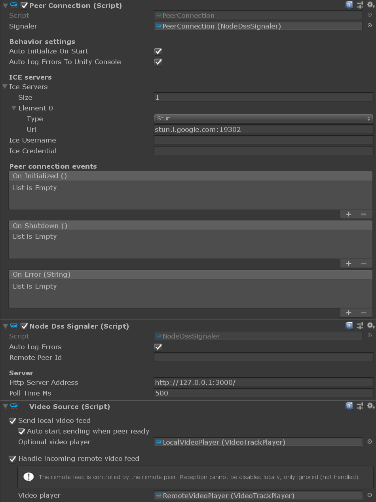

Unity components
The Unity components provide some idiomatic wrapping over the C# MixedReality-WebRTC library.
| Component | Description |
|---|---|
| PeerConnection | Encapsulates a single peer-to-peer connection to a remote peer |
| Signaler | Abstract base class of components which manage the signaling messages to allow the peer connection to establish |
| NodeDssSignaler | Simple testing / debugging Signaler implementation component based on node-dss |
| VideoSource | Component providing a hook to the local and remote video tracks of a peer connection |
| VideoTrackPlayer | Component bridging a Unity MeshRenderer with a video track from a VideoSource component |


Components by feature area
Connection
The most important component is Microsoft.MixedReality.WebRTC.Unity.PeerConnection which encapsulate the connection to a single remote peer. The peer connection works in coordination with a Signaler component, for example Microsoft.MixedReality.WebRTC.Unity.NodeDssSignaler, which handles the message transport for the session establishment.
Video
The entry point for video tracks is the VideoSource component, which is associated with a given PeerConnection and handles its video-related signals. The video source in turn makes use of one or two VideoTrackPlayer to render the content of the local and remote video tracks if needed, although this is optional.
Video frames are provided by the underlying WebRTC.PeerConnection to the VideoSource via its frame events. The video source then fills a VideoFrameQueue for each video track player associated with it. The player use that shared queue to read back the frame and display it using a custom shader.
Audio
Todo...
List of components
Microsoft.MixedReality.WebRTC.Unity.PeerConnection
This component abstracts a WebRTC peer connection and encapsulates the lower level Microsoft.MixedReality.WebRTC.PeerConnection object from the C# library. This is the main entry point for establishing a connection. It contains the list of ICE servers (Interactive Connectivity Establishment) used to punch through NAT, as well as some key events like OnInitialized and OnShutdown which mark the beginning and end of the connection from the point of view of the user.
Microsoft.MixedReality.WebRTC.Unity.Signaler
This abstract base component is used by the peer connection to establish a connection with a remote peer. The peer connection needs one concrete implementation derived from this class to be specified in its Signaler property.
Microsoft.MixedReality.WebRTC.Unity.NodeDssSignaler
THIS SHOULD NOT BE USED FOR PRODUCTION.
This components is used for debugging and testing as a concrete implementation of a Signaler component. It is based on the node-dss protocol and NodeJS service. It is very simple and helps developers starting, but lacks many features.
Microsoft.MixedReality.WebRTC.Unity.VideoSource
This component controls sending the local video track through the peer connection, and handles receiving a remote video track.
- For the local video, it controls whether or not a track is added to the WebRTC stream, and optionally provides a
VideoTrackPlayerwith frames to render that local video. - For the remote video, it controls whether or not to handle the received feed and send it to a
VideoTrackPlayerfor rendering. Note that the local peer cannot control whether or not the remote peer sends a remote track; it can only ignore it if not interested (and ideally should probably tell the remote peer that it should stop sending it, although this is application specific logic).
Microsoft.MixedReality.WebRTC.Unity.VideoTrackPlayer
This components bridges a raw video frame feed from a VideoSource to a Unity MeshRenderer for display. The component can limit the framerate of the video playback, and optionally display some statistics about it. The associated MeshRenderer on the same GameObject typically uses a YUVFeedMaterial to display the YUV-encoded feed uploaded to the main texture of that material by the video track player component.